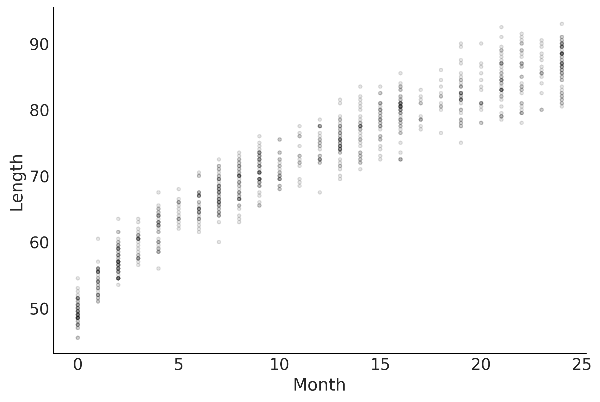
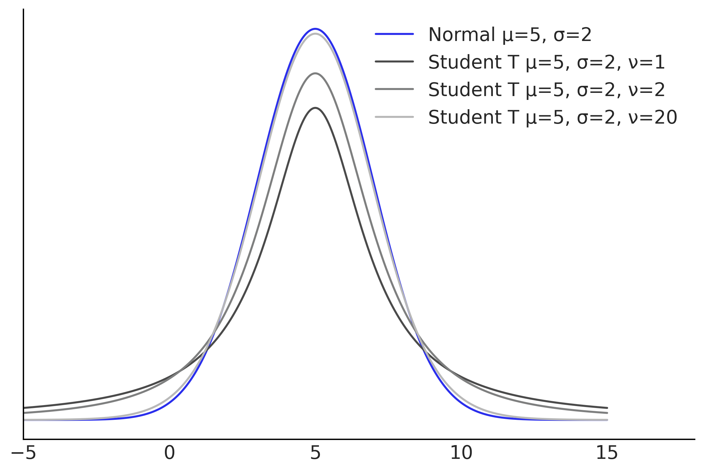
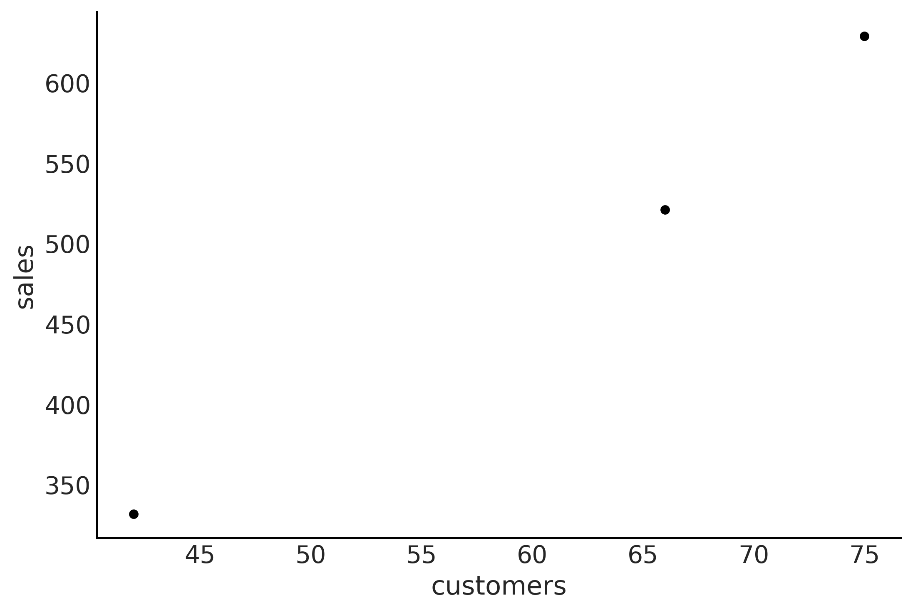
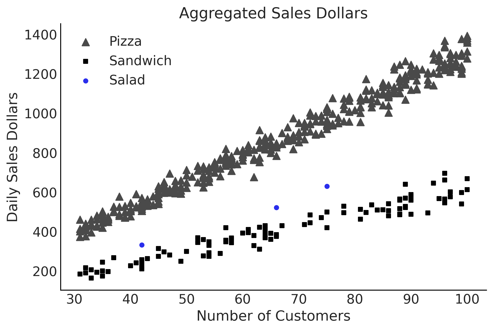
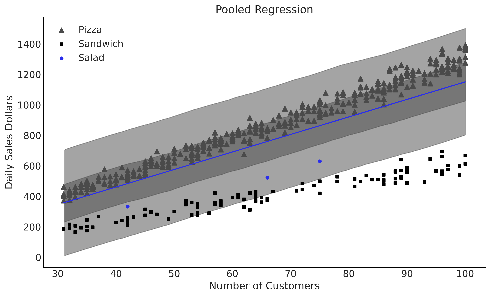
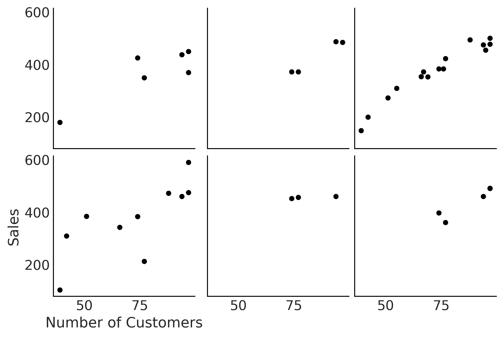

Code 4: Extending Linear Models#
This is a reference notebook for the book Bayesian Modeling and Computation in Python
The textbook is not needed to use or run this code, though the context and explanation is missing from this notebook.
If you’d like a copy it’s available from the CRC Press or from Amazon. ``
import pymc3 as pm
import matplotlib.pyplot as plt
import arviz as az
import pandas as pd
import numpy as np
from scipy import stats
import theano.tensor as tt
import theano
import datetime
print(f"Last Run {datetime.datetime.now()}")
Last Run 2021-11-19 16:44:33.955392
az.style.use("arviz-grayscale")
plt.rcParams['figure.dpi'] = 300
Transforming Covariates#
Code 4.1#
babies = pd.read_csv('../data/babies.csv')
# Add a constant term so we can use a the dot product approach
babies["Intercept"] = 1
babies.head()
| Month | Length | Intercept | |
|---|---|---|---|
| 0 | 0 | 48.5 | 1 |
| 1 | 0 | 50.5 | 1 |
| 2 | 0 | 50.5 | 1 |
| 3 | 0 | 52.0 | 1 |
| 4 | 0 | 47.5 | 1 |
Figure 4.1#
fig, ax = plt.subplots()
ax.plot(babies["Month"], babies["Length"], 'C0.', alpha=0.1)
ax.set_ylabel("Length")
ax.set_xlabel("Month");
plt.savefig('img/chp04/baby_length_scatter.png', dpi=300)

Code 4.2#
with pm.Model() as model_baby_linear:
β = pm.Normal('β', sigma=10, shape=2)
# Use dot product instead of expanded multiplication
μ = pm.Deterministic("μ", pm.math.dot(babies[["Intercept", "Month"]], β))
ϵ = pm.HalfNormal("ϵ", sigma=10)
length = pm.Normal("length", mu=μ, sigma=ϵ, observed=babies["Length"])
trace_linear = pm.sample(draws=2000, tune=4000)
pcc_linear = pm.sample_posterior_predictive(trace_linear)
inf_data_linear = az.from_pymc3(trace=trace_linear,
posterior_predictive=pcc_linear)
/var/folders/7p/srk5qjp563l5f9mrjtp44bh800jqsw/T/ipykernel_8872/2954483905.py:10: FutureWarning: In v4.0, pm.sample will return an `arviz.InferenceData` object instead of a `MultiTrace` by default. You can pass return_inferencedata=True or return_inferencedata=False to be safe and silence this warning.
trace_linear = pm.sample(draws=2000, tune=4000)
Auto-assigning NUTS sampler...
Initializing NUTS using jitter+adapt_diag...
Multiprocess sampling (4 chains in 4 jobs)
NUTS: [ϵ, β]
100.00% [24000/24000 00:08<00:00 Sampling 4 chains, 0 divergences]
Sampling 4 chains for 4_000 tune and 2_000 draw iterations (16_000 + 8_000 draws total) took 18 seconds.
The acceptance probability does not match the target. It is 0.5738214538580835, but should be close to 0.8. Try to increase the number of tuning steps.
The acceptance probability does not match the target. It is 0.8837497551468421, but should be close to 0.8. Try to increase the number of tuning steps.
100.00% [8000/8000 00:06<00:00]
Figure 4.2#
fig, ax = plt.subplots()
ax.set_ylabel("Length")
ax.set_xlabel("Month");
μ_m = inf_data_linear.posterior["μ"].values.reshape(-1, babies["Length"].shape[0]).mean(axis=0)
ax.plot(babies["Month"], μ_m, c='C4')
az.plot_hdi(babies["Month"], inf_data_linear.posterior_predictive["length"], hdi_prob=.50, ax=ax)
az.plot_hdi(babies["Month"], inf_data_linear.posterior_predictive["length"], hdi_prob=.94, ax=ax)
ax.plot(babies["Month"], babies["Length"], 'C0.', alpha=0.1)
plt.savefig('img/chp04/baby_length_linear_fit.png', dpi=300)

az.loo(inf_data_linear)
Computed from 8000 by 800 log-likelihood matrix
Estimate SE
elpd_loo -2133.32 18.59
p_loo 3.23 -
Code 4.3#
with pm.Model() as model_baby_sqrt:
β = pm.Normal("β", sigma=10, shape=2)
μ = pm.Deterministic("μ", β[0] + β[1] * np.sqrt(babies["Month"]))
σ = pm.HalfNormal("σ", sigma=10)
length = pm.Normal("length", mu=μ, sigma=σ, observed=babies["Length"])
inf_data_sqrt = pm.sample(draws=2000, tune=4000)
ppc_baby_sqrt = pm.sample_posterior_predictive(inf_data_sqrt)
inf_data_sqrt = az.from_pymc3(trace=inf_data_sqrt,
posterior_predictive=ppc_baby_sqrt)
/var/folders/7p/srk5qjp563l5f9mrjtp44bh800jqsw/T/ipykernel_8872/628193978.py:8: FutureWarning: In v4.0, pm.sample will return an `arviz.InferenceData` object instead of a `MultiTrace` by default. You can pass return_inferencedata=True or return_inferencedata=False to be safe and silence this warning.
inf_data_sqrt = pm.sample(draws=2000, tune=4000)
Auto-assigning NUTS sampler...
Initializing NUTS using jitter+adapt_diag...
Multiprocess sampling (4 chains in 4 jobs)
NUTS: [σ, β]
100.00% [24000/24000 00:10<00:00 Sampling 4 chains, 0 divergences]
Sampling 4 chains for 4_000 tune and 2_000 draw iterations (16_000 + 8_000 draws total) took 19 seconds.
100.00% [8000/8000 00:06<00:00]
fig, ax = plt.subplots()
ax.plot(babies["Month"], babies["Length"], 'C0.', alpha=0.1)
ax.set_ylabel("Length")
ax.set_xlabel("Month");
μ_m = inf_data_sqrt.posterior["μ"].values.reshape(-1, babies["Length"].shape[0]).mean(axis=0)
az.plot_hdi(babies["Month"], inf_data_sqrt.posterior_predictive["length"], hdi_prob=.50, ax=ax)
az.plot_hdi(babies["Month"], inf_data_sqrt.posterior_predictive["length"], hdi_prob=.94, ax=ax)
ax.plot(babies["Month"], μ_m, c='C4')
plt.savefig('img/chp04/baby_length_sqrt_fit.png', dpi=300)

Figure 4.3#
fig, axes = plt.subplots(1,2)
axes[0].plot(babies["Month"], babies["Length"], 'C0.', alpha=0.1)
μ_m = inf_data_sqrt.posterior["μ"].values.reshape(-1, babies["Length"].shape[0]).mean(axis=0)
axes[0].plot(babies["Month"], μ_m, c='C4')
az.plot_hdi(babies["Month"], inf_data_sqrt.posterior_predictive["length"], hdi_prob=.50, ax=axes[0])
az.plot_hdi(babies["Month"], inf_data_sqrt.posterior_predictive["length"], hdi_prob=.94, ax=axes[0])
axes[0].set_ylabel("Length")
axes[0].set_xlabel("Month");
axes[1].plot(np.sqrt(babies["Month"]), babies["Length"], 'C0.', alpha=0.1)
axes[1].set_xlabel("Square Root of Month");
az.plot_hdi(np.sqrt(babies["Month"]), inf_data_sqrt.posterior_predictive["length"], hdi_prob=.50, ax=axes[1])
az.plot_hdi(np.sqrt(babies["Month"]), inf_data_sqrt.posterior_predictive["length"], hdi_prob=.94, ax=axes[1])
axes[1].plot(np.sqrt(babies["Month"]), μ_m, c='C4')
axes[1].set_yticks([])
axes[1]
plt.savefig('img/chp04/baby_length_sqrt_fit.png', dpi=300)
az.compare({"Linear Model":inf_data_linear, "Non Linear Model":inf_data_sqrt})
/opt/miniconda3/envs/bmcp/lib/python3.9/site-packages/arviz/stats/stats.py:145: UserWarning: The default method used to estimate the weights for each model,has changed from BB-pseudo-BMA to stacking
warnings.warn(
| rank | loo | p_loo | d_loo | weight | se | dse | warning | loo_scale | |
|---|---|---|---|---|---|---|---|---|---|
| Non Linear Model | 0 | -1968.218405 | 3.079101 | 0.000000 | 0.928708 | 18.990940 | 0.000000 | False | log |
| Linear Model | 1 | -2133.321593 | 3.229639 | 165.103188 | 0.071292 | 18.589207 | 20.083518 | False | log |
Varying Uncertainty#
Code 4.4#
with pm.Model() as model_baby_vv:
β = pm.Normal("β", sigma=10, shape=2)
# Additional variance terms
δ = pm.HalfNormal("δ", sigma=10, shape=2)
μ = pm.Deterministic("μ", β[0] + β[1] * np.sqrt(babies["Month"]))
σ = pm.Deterministic("σ", δ[0] + δ[1] * babies["Month"])
length = pm.Normal("length", mu=μ, sigma=σ, observed=babies["Length"])
trace_baby_vv = pm.sample(2000, target_accept=.95)
ppc_baby_vv = pm.sample_posterior_predictive(trace_baby_vv,
var_names=["length", "σ"])
inf_data_baby_vv = az.from_pymc3(trace=trace_baby_vv,
posterior_predictive=ppc_baby_vv)
/var/folders/7p/srk5qjp563l5f9mrjtp44bh800jqsw/T/ipykernel_8872/3065721124.py:12: FutureWarning: In v4.0, pm.sample will return an `arviz.InferenceData` object instead of a `MultiTrace` by default. You can pass return_inferencedata=True or return_inferencedata=False to be safe and silence this warning.
trace_baby_vv = pm.sample(2000, target_accept=.95)
Auto-assigning NUTS sampler...
Initializing NUTS using jitter+adapt_diag...
Multiprocess sampling (4 chains in 4 jobs)
NUTS: [δ, β]
100.00% [12000/12000 00:09<00:00 Sampling 4 chains, 0 divergences]
Sampling 4 chains for 1_000 tune and 2_000 draw iterations (4_000 + 8_000 draws total) took 19 seconds.
100.00% [8000/8000 00:08<00:00]
az.summary(inf_data_baby_vv, var_names=["δ"])
| mean | sd | hdi_3% | hdi_97% | mcse_mean | mcse_sd | ess_bulk | ess_tail | r_hat | |
|---|---|---|---|---|---|---|---|---|---|
| δ[0] | 2.389 | 0.117 | 2.17 | 2.609 | 0.002 | 0.002 | 2715.0 | 2919.0 | 1.0 |
| δ[1] | 0.038 | 0.009 | 0.02 | 0.056 | 0.000 | 0.000 | 2663.0 | 2329.0 | 1.0 |
fig, ax = plt.subplots()
ax.set_ylabel("Length")
ax.set_xlabel("Month");
ax.plot(babies["Month"], babies["Length"], 'C0.', alpha=0.1)
μ_m = inf_data_baby_vv.posterior["μ"].values.reshape(-1, babies["Length"].shape[0]).mean(axis=0)
ax.plot(babies["Month"], μ_m, c='C4')
az.plot_hdi(babies["Month"], inf_data_baby_vv.posterior_predictive["length"], hdi_prob=.50, ax=ax)
az.plot_hdi(babies["Month"], inf_data_baby_vv.posterior_predictive["length"], hdi_prob=.94, ax=ax)
plt.savefig('img/chp04/baby_length_sqrt_vv_fit.png', dpi=300)
Figure 4.4#
fig, axes = plt.subplots(2,1)
axes[0].plot(babies["Month"], babies["Length"], 'C0.', alpha=0.1)
μ_m = inf_data_baby_vv.posterior["μ"].values.reshape(-1, babies["Length"].shape[0]).mean(axis=0)
axes[0].plot(babies["Month"], μ_m, c='C4')
az.plot_hdi(babies["Month"], inf_data_baby_vv.posterior_predictive["length"], hdi_prob=.50, ax=axes[0])
az.plot_hdi(babies["Month"], inf_data_baby_vv.posterior_predictive["length"], hdi_prob=.94, ax=axes[0])
axes[0].set_ylabel("Length")
σ_m = inf_data_baby_vv.posterior["σ"].values.reshape(-1, 800).mean(axis=0)
axes[1].plot(babies["Month"], σ_m, c='C1')
axes[1].set_ylabel("σ")
axes[1].set_xlabel("Month")
axes[0].set_xlim(0,24)
axes[1].set_xlim(0,24)
plt.savefig('img/chp04/baby_length_sqrt_vv_fit_include_error.png', dpi=300)
Interaction effects#
Code 4.5#
tips_df = pd.read_csv('../data/tips.csv')
tips_df.head()
| total_bill | tip | sex | smoker | day | time | size | |
|---|---|---|---|---|---|---|---|
| 0 | 16.99 | 1.01 | Female | No | Sun | Dinner | 2 |
| 1 | 10.34 | 1.66 | Male | No | Sun | Dinner | 3 |
| 2 | 21.01 | 3.50 | Male | No | Sun | Dinner | 3 |
| 3 | 23.68 | 3.31 | Male | No | Sun | Dinner | 2 |
| 4 | 24.59 | 3.61 | Female | No | Sun | Dinner | 4 |
tips = tips_df["tip"]
total_bill_c = (tips_df["total_bill"] - tips_df["total_bill"].mean())
smoker = pd.Categorical(tips_df["smoker"]).codes
with pm.Model() as model_no_interaction:
β = pm.Normal("β", mu=0, sigma=1, shape=3)
σ = pm.HalfNormal("σ", 1)
μ = (β[0] +
β[1] * total_bill_c +
β[2] * smoker)
obs = pm.Normal("obs", μ, σ, observed=tips)
trace_no_interaction = pm.sample(1000, tune=1000)
/var/folders/7p/srk5qjp563l5f9mrjtp44bh800jqsw/T/ipykernel_8872/3786948218.py:14: FutureWarning: In v4.0, pm.sample will return an `arviz.InferenceData` object instead of a `MultiTrace` by default. You can pass return_inferencedata=True or return_inferencedata=False to be safe and silence this warning.
trace_no_interaction = pm.sample(1000, tune=1000)
Auto-assigning NUTS sampler...
Initializing NUTS using jitter+adapt_diag...
Multiprocess sampling (4 chains in 4 jobs)
NUTS: [σ, β]
100.00% [8000/8000 00:03<00:00 Sampling 4 chains, 0 divergences]
Sampling 4 chains for 1_000 tune and 1_000 draw iterations (4_000 + 4_000 draws total) took 13 seconds.
_, ax = plt.subplots(figsize=(8, 4.5))
β0_nonint = trace_no_interaction['β'][:,0]
β1_nonint = trace_no_interaction['β'][:,1]
β2_nonint = trace_no_interaction['β'][:,2]
pred_y_non_smokers = β0_nonint + β1_nonint * total_bill_c[:,None]
pred_y_smokers = β0_nonint + β1_nonint * total_bill_c[:,None] + β2_nonint
ax.scatter(total_bill_c[smoker==0], tips[smoker==0], label='non-smokers', marker='.')
ax.scatter(total_bill_c[smoker==1], tips[smoker==1], label='smokers', marker='.', c="C4")
ax.set_xlabel('Total Bill')
ax.set_ylabel('Tip')
ax.legend()
ax.plot(total_bill_c, pred_y_non_smokers.mean(1), lw=2)
ax.plot(total_bill_c, pred_y_smokers.mean(1), lw=2, c="C4");
/var/folders/7p/srk5qjp563l5f9mrjtp44bh800jqsw/T/ipykernel_8872/2436504886.py:7: FutureWarning: Support for multi-dimensional indexing (e.g. `obj[:, None]`) is deprecated and will be removed in a future version. Convert to a numpy array before indexing instead.
pred_y_non_smokers = β0_nonint + β1_nonint * total_bill_c[:,None]
/var/folders/7p/srk5qjp563l5f9mrjtp44bh800jqsw/T/ipykernel_8872/2436504886.py:8: FutureWarning: Support for multi-dimensional indexing (e.g. `obj[:, None]`) is deprecated and will be removed in a future version. Convert to a numpy array before indexing instead.
pred_y_smokers = β0_nonint + β1_nonint * total_bill_c[:,None] + β2_nonint

Code 4.6#
with pm.Model() as model_interaction:
β = pm.Normal('β', mu=0, sigma=1, shape=4)
σ = pm.HalfNormal('σ', 1)
μ = (β[0] +
β[1] * total_bill_c +
β[2] * smoker +
β[3] * smoker * total_bill_c
)
obs = pm.Normal('obs', μ, σ, observed=tips)
trace_interaction = pm.sample(1000, tune=1000)
/var/folders/7p/srk5qjp563l5f9mrjtp44bh800jqsw/T/ipykernel_8872/146995100.py:12: FutureWarning: In v4.0, pm.sample will return an `arviz.InferenceData` object instead of a `MultiTrace` by default. You can pass return_inferencedata=True or return_inferencedata=False to be safe and silence this warning.
trace_interaction = pm.sample(1000, tune=1000)
Auto-assigning NUTS sampler...
Initializing NUTS using jitter+adapt_diag...
Multiprocess sampling (4 chains in 4 jobs)
NUTS: [σ, β]
100.00% [8000/8000 00:04<00:00 Sampling 4 chains, 0 divergences]
Sampling 4 chains for 1_000 tune and 1_000 draw iterations (4_000 + 4_000 draws total) took 13 seconds.
Figure 4.5#
total_bill_c = total_bill_c.values
_, ax = plt.subplots(1, 2, figsize=(8, 4.5))
#α_nonint = trace_nonint['α']
β0_nonint = trace_no_interaction['β'][:,0]
β1_nonint = trace_no_interaction['β'][:,1]
β2_nonint = trace_no_interaction['β'][:,2]
pred_y_non_smokers = β0_nonint + β1_nonint * total_bill_c[:,None]
pred_y_smokers = β0_nonint + β1_nonint * total_bill_c[:,None] + β2_nonint
ax[0].scatter(total_bill_c[smoker==0], tips[smoker==0], label='non-smokers', marker='.')
ax[0].scatter(total_bill_c[smoker==1], tips[smoker==1], label='smokers', marker='.', c="C4")
ax[0].set_xlabel('Total Bill (Centered)')
ax[0].set_ylabel('Tip')
ax[0].legend(frameon=True)
ax[0].plot(total_bill_c, pred_y_non_smokers.mean(1), lw=2)
ax[0].plot(total_bill_c, pred_y_smokers.mean(1), lw=2, c="C4")
ax[0].set_title('No Interaction')
az.plot_hdi(total_bill_c, pred_y_non_smokers.T, color='C0', ax=ax[0])
az.plot_hdi(total_bill_c, pred_y_smokers.T, ax=ax[0], color="C4");
β0_int = trace_interaction['β'][:,0]
β1_int = trace_interaction['β'][:,1]
β2_int = trace_interaction['β'][:,2]
β3_int = trace_interaction['β'][:,3]
# Because smoker=0 I am ommiting the terms including the smoker covariate
pred_y_non_smokers = (β0_int +
β1_int * total_bill_c[:, None])
# Because x1=1 I am ommiting x1
pred_y_smokers = (β0_int +
β1_int * total_bill_c[:, None] +
β2_int +
β3_int * total_bill_c[:, None])
ax[1].scatter(total_bill_c[smoker==0], tips[smoker==0], label='non-smokers', marker='.')
ax[1].scatter(total_bill_c[smoker==1], tips[smoker==1], label='smokers', marker='.', c="C4")
ax[1].set_xlabel('Total Bill (Centered)')
ax[1].set_yticks([])
ax[1].set_title('Interaction')
ax[1].plot(total_bill_c, pred_y_non_smokers.mean(1), lw=2)
ax[1].plot(total_bill_c, pred_y_smokers.mean(1), lw=2)
az.plot_hdi(total_bill_c, pred_y_non_smokers.T, color='C0', ax=ax[1])
az.plot_hdi(total_bill_c, pred_y_smokers.T, ax=ax[1], color="C4");
plt.savefig('img/chp04/smoker_tip_interaction.png', dpi=300)
/opt/miniconda3/envs/bmcp/lib/python3.9/site-packages/arviz/stats/stats.py:456: FutureWarning: hdi currently interprets 2d data as (draw, shape) but this will change in a future release to (chain, draw) for coherence with other functions
warnings.warn(
/opt/miniconda3/envs/bmcp/lib/python3.9/site-packages/arviz/stats/stats.py:456: FutureWarning: hdi currently interprets 2d data as (draw, shape) but this will change in a future release to (chain, draw) for coherence with other functions
warnings.warn(
/opt/miniconda3/envs/bmcp/lib/python3.9/site-packages/arviz/stats/stats.py:456: FutureWarning: hdi currently interprets 2d data as (draw, shape) but this will change in a future release to (chain, draw) for coherence with other functions
warnings.warn(
/opt/miniconda3/envs/bmcp/lib/python3.9/site-packages/arviz/stats/stats.py:456: FutureWarning: hdi currently interprets 2d data as (draw, shape) but this will change in a future release to (chain, draw) for coherence with other functions
warnings.warn(

Robust Regression#
Figure 4.6#
mean = 5
sigma = 2
x = np.linspace(-5, 15, 1000)
fig, ax = plt.subplots()
ax.plot(x, stats.norm(5,2).pdf(x), label=f"Normal μ={mean}, σ={sigma}", color="C4")
for i, nu in enumerate([1, 2, 20],1):
ax.plot(x, stats.t(loc=5, scale=2, df=nu).pdf(x), label=f"Student T μ={mean}, σ={sigma}, ν={nu}", color=f"C{i}")
ax.set_xlim(-5, 18)
ax.legend(loc="upper right", frameon=False)
ax.set_yticks([])
plt.savefig('img/chp04/studentt_normal_comparison.png', dpi=300)

Figure 4.7#
def generate_sales(*, days, mean, std, label):
np.random.seed(0)
df = pd.DataFrame(index=range(1, days+1), columns=["customers", "sales"])
for day in range(1, days+1):
num_customers = stats.randint(30, 100).rvs()+1
# This is correct as there is an independent draw for each customers orders
dollar_sales = stats.norm(mean, std).rvs(num_customers).sum()
df.loc[day, "customers"] = num_customers
df.loc[day, "sales"] = dollar_sales
# Fix the types as not to cause Theano errors
df = df.astype({'customers': 'int32', 'sales': 'float32'})
# Sorting will make plotting the posterior predictive easier later
df["Food_Category"] = label
df = df.sort_values("customers")
return df
fig, ax = plt.subplots()
empanadas = generate_sales(days=200, mean=180, std=30, label="Empanada")
empanadas.iloc[0] = [50, 92000, "Empanada"]
empanadas.iloc[1] = [60, 90000, "Empanada"]
empanadas.iloc[2] = [70, 96000, "Empanada"]
empanadas.iloc[3] = [80, 91000, "Empanada"]
empanadas.iloc[4] = [90, 99000, "Empanada"]
empanadas = empanadas.sort_values("customers")
empanadas.sort_values("sales")[:-5].plot(x="customers", y="sales", kind="scatter", ax=ax);
empanadas.sort_values("sales")[-5:].plot(x="customers", y="sales", kind="scatter", c="C4", ax=ax);
ax.set_ylabel("Argentine Peso")
ax.set_xlabel("Customer Count")
ax.set_title("Empanada Sales")
plt.savefig('img/chp04/empanada_scatter_plot.png', dpi=300)

Code 4.7#
with pm.Model() as model_non_robust:
σ = pm.HalfNormal("σ", 50)
β = pm.Normal('β', mu=150, sigma=20)
μ = pm.Deterministic("μ", β * empanadas["customers"])
sales = pm.Normal("sales", mu=μ, sigma=σ, observed=empanadas["sales"])
trace_empanada_sales = pm.sample(random_seed=1)
ppc_empanada_sales = pm.sample_posterior_predictive(
trace_empanada_sales)
inf_data_non_robust = az.from_pymc3(trace = trace_empanada_sales,
posterior_predictive=ppc_empanada_sales)
/var/folders/7p/srk5qjp563l5f9mrjtp44bh800jqsw/T/ipykernel_8872/1588961933.py:9: FutureWarning: In v4.0, pm.sample will return an `arviz.InferenceData` object instead of a `MultiTrace` by default. You can pass return_inferencedata=True or return_inferencedata=False to be safe and silence this warning.
trace_empanada_sales = pm.sample(random_seed=1)
Auto-assigning NUTS sampler...
Initializing NUTS using jitter+adapt_diag...
Multiprocess sampling (4 chains in 4 jobs)
NUTS: [β, σ]
100.00% [8000/8000 00:07<00:00 Sampling 4 chains, 0 divergences]
Sampling 4 chains for 1_000 tune and 1_000 draw iterations (4_000 + 4_000 draws total) took 16 seconds.
The acceptance probability does not match the target. It is 0.8860777877942666, but should be close to 0.8. Try to increase the number of tuning steps.
100.00% [4000/4000 00:03<00:00]
Figure 4.8#
fig, axes = plt.subplots(2, 1, figsize=(8, 4), sharex=True)
μ_m = inf_data_non_robust.posterior["μ"].values.reshape(-1, empanadas.shape[0]).mean(axis=0)
for i in range(2):
empanadas.sort_values("sales")[:-5].plot(x="customers", y="sales", kind="scatter", ax=axes[i]);
empanadas.sort_values("sales")[-5:].plot(x="customers", y="sales", kind="scatter", c="C4", ax=axes[i]);
axes[i].plot(empanadas.customers, μ_m, c='C4')
az.plot_hdi(empanadas.customers, inf_data_non_robust.posterior_predictive["sales"], hdi_prob=.95, ax=axes[i])
axes[1].set_ylabel("Argentine Peso")
axes[0].set_ylabel("")
axes[1].set_xlabel("Customer Count")
axes[1].set_ylim(400, 25000);
plt.savefig('img/chp04/empanada_scatter_non_robust.png', dpi=300)
Table 4.1#
az.summary(inf_data_non_robust, kind="stats", var_names=["β", "σ"]).round(1)
| mean | sd | hdi_3% | hdi_97% | |
|---|---|---|---|---|
| β | 207.0 | 3.0 | 201.4 | 212.5 |
| σ | 2952.3 | 25.3 | 2904.3 | 2997.6 |
with pm.Model() as model_robust:
σ = pm.HalfNormal("σ", 50)
β = pm.Normal("β", mu=150, sigma=20)
ν = pm.HalfNormal("ν", 20)
μ = pm.Deterministic("μ", β * empanadas["customers"])
sales = pm.StudentT("sales", mu=μ, sigma=σ, nu=ν,
observed=empanadas["sales"])
trace_empanada_sales_robust = pm.sample(random_seed=0)
ppc_empanada_sales_robust = pm.sample_posterior_predictive(
trace_empanada_sales_robust)
inf_data_robust = az.from_pymc3(trace = trace_empanada_sales_robust,
posterior_predictive=ppc_empanada_sales_robust)
/var/folders/7p/srk5qjp563l5f9mrjtp44bh800jqsw/T/ipykernel_8872/2239246076.py:11: FutureWarning: In v4.0, pm.sample will return an `arviz.InferenceData` object instead of a `MultiTrace` by default. You can pass return_inferencedata=True or return_inferencedata=False to be safe and silence this warning.
trace_empanada_sales_robust = pm.sample(random_seed=0)
Auto-assigning NUTS sampler...
Initializing NUTS using jitter+adapt_diag...
Multiprocess sampling (4 chains in 4 jobs)
NUTS: [ν, β, σ]
100.00% [8000/8000 00:03<00:00 Sampling 4 chains, 0 divergences]
Sampling 4 chains for 1_000 tune and 1_000 draw iterations (4_000 + 4_000 draws total) took 12 seconds.
100.00% [4000/4000 00:02<00:00]
Table 4.2#
az.summary(inf_data_robust, var_names=["β", "σ", "ν"], kind="stats").round(1)
| mean | sd | hdi_3% | hdi_97% | |
|---|---|---|---|---|
| β | 179.6 | 0.3 | 179.1 | 180.1 |
| σ | 152.0 | 13.9 | 126.4 | 178.4 |
| ν | 1.3 | 0.2 | 1.0 | 1.6 |
Figure 4.9#
fig, ax = plt.subplots(figsize=(10, 6))
μ_m = inf_data_robust.posterior["μ"].values.reshape(-1, empanadas.shape[0]).mean(axis=0)
ax.plot(empanadas.customers, μ_m, c='C4')
az.plot_hdi(empanadas.customers, inf_data_robust.posterior_predictive["sales"], hdi_prob=.95, ax=ax)
empanadas.plot(x="customers", y="sales", kind="scatter", ax=ax)
ax.set_ylim(4000, 20000);
ax.set_ylabel("Argentine Peso")
ax.set_xlabel("Customer Count")
ax.set_title("Empanada Sales with Robust Regression Fit")
plt.savefig('img/chp04/empanada_scatter_robust.png', dpi=300)
az.compare({"Non robust": inf_data_non_robust, "Robust":inf_data_robust})
/opt/miniconda3/envs/bmcp/lib/python3.9/site-packages/arviz/stats/stats.py:145: UserWarning: The default method used to estimate the weights for each model,has changed from BB-pseudo-BMA to stacking
warnings.warn(
/opt/miniconda3/envs/bmcp/lib/python3.9/site-packages/arviz/stats/stats.py:655: UserWarning: Estimated shape parameter of Pareto distribution is greater than 0.7 for one or more samples. You should consider using a more robust model, this is because importance sampling is less likely to work well if the marginal posterior and LOO posterior are very different. This is more likely to happen with a non-robust model and highly influential observations.
warnings.warn(
| rank | loo | p_loo | d_loo | weight | se | dse | warning | loo_scale | |
|---|---|---|---|---|---|---|---|---|---|
| Robust | 0 | -1473.978565 | 5.912134 | 0.000000 | 1.000000e+00 | 31.902351 | 0.000000 | False | log |
| Non robust | 1 | -3698.588569 | 146.177400 | 2224.610004 | 1.146134e-09 | 829.237992 | 799.490297 | True | log |
Pooling, Multilevel Models, and Mixed Effects#
def generate_sales(*, days, mean, std, label):
np.random.seed(0)
df = pd.DataFrame(index=range(1, days+1), columns=["customers", "sales"])
for day in range(1, days+1):
num_customers = stats.randint(30, 100).rvs()+1
# This is correct as there is an independent draw for each customers orders
dollar_sales = stats.norm(mean, std).rvs(num_customers).sum()
df.loc[day, "customers"] = num_customers
df.loc[day, "sales"] = dollar_sales
# Fix the types as not to cause Theano errors
df = df.astype({'customers': 'int32', 'sales': 'float32'})
# Sorting will make plotting the posterior predictive easier later
df["Food_Category"] = label
df = df.sort_values("customers")
return df
pizza_df = generate_sales(days=365, mean=13, std=5, label="Pizza")
sandwich_df = generate_sales(days=100, mean=6, std=5, label="Sandwich")
salad_days = 3
salad_df = generate_sales(days=salad_days, mean=8 ,std=3, label="Salad")
salad_df.plot(x="customers", y="sales", kind="scatter");

sales_df = pd.concat([pizza_df, sandwich_df, salad_df]).reset_index(drop=True)
sales_df["Food_Category"] = pd.Categorical(sales_df["Food_Category"])
sales_df
| customers | sales | Food_Category | |
|---|---|---|---|
| 0 | 31 | 459.895203 | Pizza |
| 1 | 31 | 401.147736 | Pizza |
| 2 | 31 | 413.345245 | Pizza |
| 3 | 31 | 371.909241 | Pizza |
| 4 | 32 | 433.797089 | Pizza |
| ... | ... | ... | ... |
| 463 | 100 | 611.736816 | Sandwich |
| 464 | 100 | 667.152954 | Sandwich |
| 465 | 42 | 331.625702 | Salad |
| 466 | 66 | 520.900940 | Salad |
| 467 | 75 | 628.937622 | Salad |
468 rows × 3 columns
Figure 4.10#
fig, ax = plt.subplots()
pizza_df.plot(x="customers", y="sales", kind="scatter", ax=ax, c="C1", label="Pizza", marker="^", s=60);
sandwich_df.plot(x="customers", y="sales", kind="scatter", ax=ax, label="Sandwich", marker="s");
salad_df.plot(x="customers", y="sales", kind="scatter", ax=ax, label="Salad", c="C4");
ax.set_xlabel("Number of Customers")
ax.set_ylabel("Daily Sales Dollars")
ax.set_title("Aggregated Sales Dollars")
ax.legend()
plt.savefig('img/chp04/restaurant_order_scatter.png', dpi=300)

Unpooled Model#
Code 4.9#
customers = sales_df.loc[:, "customers"].values
sales_observed = sales_df.loc[:, "sales"].values
food_category = pd.Categorical(sales_df["Food_Category"])
with pm.Model() as model_sales_unpooled:
σ = pm.HalfNormal("σ", 20, shape=3)
β = pm.Normal("β", mu=10, sigma=10, shape=3)
μ = pm.Deterministic("μ", β[food_category.codes] *customers)
sales = pm.Normal("sales", mu=μ, sigma=σ[food_category.codes],
observed=sales_observed)
trace_sales_unpooled = pm.sample(target_accept=.9)
inf_data_sales_unpooled = az.from_pymc3(
trace=trace_sales_unpooled,
coords={"β_dim_0":food_category.categories,
"σ_dim_0":food_category.categories})
/var/folders/7p/srk5qjp563l5f9mrjtp44bh800jqsw/T/ipykernel_8872/3049063767.py:14: FutureWarning: In v4.0, pm.sample will return an `arviz.InferenceData` object instead of a `MultiTrace` by default. You can pass return_inferencedata=True or return_inferencedata=False to be safe and silence this warning.
trace_sales_unpooled = pm.sample(target_accept=.9)
Auto-assigning NUTS sampler...
Initializing NUTS using jitter+adapt_diag...
Multiprocess sampling (4 chains in 4 jobs)
NUTS: [β, σ]
100.00% [8000/8000 00:05<00:00 Sampling 4 chains, 0 divergences]
Sampling 4 chains for 1_000 tune and 1_000 draw iterations (4_000 + 4_000 draws total) took 14 seconds.
Figure 4.12#
sales_unpooled_diagram = pm.model_to_graphviz(model_sales_unpooled)
sales_unpooled_diagram.render("img/chp04/salad_sales_basic_regression_model_unpooled", format="png", cleanup=True)
sales_unpooled_diagram
inf_data_salads_sales_unpooled = inf_data_sales_unpooled.posterior.sel(β_dim_0="Salad", μ_dim_0=slice(465, 467))
az.summary(inf_data_sales_unpooled, var_names=["β", "σ"])
| mean | sd | hdi_3% | hdi_97% | mcse_mean | mcse_sd | ess_bulk | ess_tail | r_hat | |
|---|---|---|---|---|---|---|---|---|---|
| β[0] | 13.025 | 0.030 | 12.970 | 13.081 | 0.000 | 0.000 | 5104.0 | 2785.0 | 1.0 |
| β[1] | 8.129 | 0.214 | 7.720 | 8.561 | 0.004 | 0.003 | 3504.0 | 2280.0 | 1.0 |
| β[2] | 6.111 | 0.052 | 6.010 | 6.204 | 0.001 | 0.001 | 5298.0 | 2765.0 | 1.0 |
| σ[0] | 40.128 | 1.469 | 37.362 | 42.801 | 0.020 | 0.014 | 5405.0 | 2605.0 | 1.0 |
| σ[1] | 21.361 | 8.327 | 8.919 | 37.105 | 0.158 | 0.116 | 3148.0 | 3021.0 | 1.0 |
| σ[2] | 35.931 | 2.506 | 31.092 | 40.501 | 0.034 | 0.024 | 5377.0 | 2902.0 | 1.0 |
az.plot_trace(inf_data_sales_unpooled, var_names=["β", "σ"], compact=False);

Figure 4.13#
axes = az.plot_forest([inf_data_sales_unpooled],
model_names = ["Unpooled",],
var_names=["β"], combined=True, figsize=(7, 1.8));
axes[0].set_title("β parameter estimates 94% HDI")
plt.savefig("img/chp04/salad_sales_basic_regression_forestplot_beta.png")
Figure 4.14#
axes = az.plot_forest([inf_data_salads_sales_unpooled,],
model_names = ["Unpooled",],
var_names=["σ"], combined=True, figsize=(7, 1.8));
axes[0].set_title("σ parameter estimates 94% HDI")
plt.savefig("img/chp04/salad_sales_basic_regression_forestplot_sigma.png")
Pooled Model#
Code 4.10#
with pm.Model() as model_sales_pooled:
σ = pm.HalfNormal("σ", 20)
β = pm.Normal("β", mu=10, sigma=10)
μ = pm.Deterministic("μ", β * customers)
sales = pm.Normal("sales", mu=μ, sigma=σ,
observed=sales_observed)
inf_data_sales_pooled = pm.sample()
/var/folders/7p/srk5qjp563l5f9mrjtp44bh800jqsw/T/ipykernel_8872/1895007518.py:10: FutureWarning: In v4.0, pm.sample will return an `arviz.InferenceData` object instead of a `MultiTrace` by default. You can pass return_inferencedata=True or return_inferencedata=False to be safe and silence this warning.
inf_data_sales_pooled = pm.sample()
Auto-assigning NUTS sampler...
Initializing NUTS using jitter+adapt_diag...
Multiprocess sampling (4 chains in 4 jobs)
NUTS: [β, σ]
100.00% [8000/8000 00:02<00:00 Sampling 4 chains, 0 divergences]
Sampling 4 chains for 1_000 tune and 1_000 draw iterations (4_000 + 4_000 draws total) took 11 seconds.
with model_sales_pooled:
ppc_sales_pooled = pm.sample_posterior_predictive(inf_data_sales_pooled)
inf_data_sales_pooled = az.from_pymc3(
trace=inf_data_sales_pooled,
posterior_predictive=ppc_sales_pooled)
100.00% [4000/4000 00:03<00:00]
Figure 4.16#
pooled_sales_diagram = pm.model_to_graphviz(model_sales_pooled)
pooled_sales_diagram.render("img/chp04/salad_sales_basic_regression_model_pooled", format="png", cleanup=True)
pooled_sales_diagram
az.plot_trace(inf_data_sales_pooled, var_names=["β", "σ"], compact=False);
az.summary(inf_data_sales_pooled, var_names=["β", "σ"])
| mean | sd | hdi_3% | hdi_97% | mcse_mean | mcse_sd | ess_bulk | ess_tail | r_hat | |
|---|---|---|---|---|---|---|---|---|---|
| β | 11.498 | 0.126 | 11.264 | 11.729 | 0.002 | 0.001 | 3561.0 | 2629.0 | 1.0 |
| σ | 186.204 | 5.271 | 176.336 | 195.841 | 0.090 | 0.063 | 3466.0 | 3240.0 | 1.0 |
Figure 4.17#
axes = az.plot_forest([inf_data_sales_pooled, inf_data_sales_unpooled],
model_names = ["Pooled", "Unpooled"], var_names=["σ"], combined=True, figsize=(7, 1.8));
axes[0].set_title("Comparison of pooled and unpooled models \n 94% HDI")
#plt.subplots_adjust(top=1)
plt.savefig("img/chp04/salad_sales_basic_regression_forestplot_sigma_comparison.png", bbox_inches='tight')

Figure 4.18#
fig, ax = plt.subplots(figsize=(10, 6))
μ_m = inf_data_sales_pooled.posterior["μ"].values.reshape(-1, sales_df.shape[0]).mean(axis=0)
σ_m = inf_data_sales_pooled.posterior["σ"].mean().values
ax.plot(customers, μ_m, c='C4')
az.plot_hdi(customers, inf_data_sales_pooled.posterior_predictive["sales"], hdi_prob=.50, ax=ax)
az.plot_hdi(customers, inf_data_sales_pooled.posterior_predictive["sales"], hdi_prob=.94, ax=ax)
pizza_df.plot(x="customers", y="sales", kind="scatter", ax=ax, c="C1", label="Pizza", marker="^", s=60);
sandwich_df.plot(x="customers", y="sales", kind="scatter", ax=ax, label="Sandwich", marker="s");
salad_df.plot(x="customers", y="sales", kind="scatter", ax=ax, label="Salad", c="C4");
ax.set_xlabel("Number of Customers")
ax.set_ylabel("Daily Sales Dollars")
ax.set_title("Pooled Regression")
plt.savefig("img/chp04/salad_sales_basic_regression_scatter_pooled.png")

Code 4.11#
with pm.Model() as model_pooled_sigma_sales:
σ = pm.HalfNormal("σ", 20)
β = pm.Normal("β", mu=10, sigma=20, shape=3)
μ = pm.Deterministic("μ", β[food_category.codes] * customers)
sales = pm.Normal("sales", mu=μ, sigma=σ, observed=sales_observed)
trace_pooled_sigma_sales = pm.sample()
ppc_pooled_sigma_sales = pm.sample_posterior_predictive(
trace_pooled_sigma_sales)
inf_data_pooled_sigma_sales = az.from_pymc3(
trace=trace_pooled_sigma_sales,
posterior_predictive=ppc_pooled_sigma_sales,
coords={"β_dim_0":food_category.categories})
/var/folders/7p/srk5qjp563l5f9mrjtp44bh800jqsw/T/ipykernel_8872/2977589499.py:9: FutureWarning: In v4.0, pm.sample will return an `arviz.InferenceData` object instead of a `MultiTrace` by default. You can pass return_inferencedata=True or return_inferencedata=False to be safe and silence this warning.
trace_pooled_sigma_sales = pm.sample()
Auto-assigning NUTS sampler...
Initializing NUTS using jitter+adapt_diag...
Multiprocess sampling (4 chains in 4 jobs)
NUTS: [β, σ]
100.00% [8000/8000 00:03<00:00 Sampling 4 chains, 0 divergences]
Sampling 4 chains for 1_000 tune and 1_000 draw iterations (4_000 + 4_000 draws total) took 12 seconds.
100.00% [4000/4000 00:03<00:00]
multilevel_sales_diagram = pm.model_to_graphviz(model_pooled_sigma_sales)
multilevel_sales_diagram.render("img/chp04/salad_sales_basic_regression_model_multilevel", format="png", cleanup=True)
multilevel_sales_diagram
az.summary(inf_data_pooled_sigma_sales, var_names=["β", "σ"])
| mean | sd | hdi_3% | hdi_97% | mcse_mean | mcse_sd | ess_bulk | ess_tail | r_hat | |
|---|---|---|---|---|---|---|---|---|---|
| β[0] | 13.025 | 0.030 | 12.971 | 13.082 | 0.000 | 0.000 | 7261.0 | 3250.0 | 1.0 |
| β[1] | 8.128 | 0.366 | 7.441 | 8.776 | 0.005 | 0.003 | 6291.0 | 3066.0 | 1.0 |
| β[2] | 6.113 | 0.059 | 6.003 | 6.226 | 0.001 | 0.001 | 6336.0 | 2674.0 | 1.0 |
| σ | 39.257 | 1.318 | 36.809 | 41.689 | 0.017 | 0.012 | 6281.0 | 2926.0 | 1.0 |
Figure 4.20#
fig, ax = plt.subplots(figsize=(10, 6))
σ_m = inf_data_sales_pooled.posterior["σ"].mean().values
# Salads
for i in range(3):
category_mask = (food_category.codes==i)
μ_m_salads = inf_data_pooled_sigma_sales.posterior["μ"][:,:, category_mask].mean(axis=(0,1))
ax.plot(sales_df.customers[category_mask], μ_m_salads, c='C4')
az.plot_hdi(sales_df.customers[category_mask], inf_data_pooled_sigma_sales.posterior_predictive["sales"][:,:, (category_mask)], hdi_prob=.50, ax=ax, fill_kwargs={"alpha": .5})
#az.plot_hdi(sales_df.customers[category_mask], inf_data_pooled_sigma_sales.posterior_predictive["sales"][:,:, (category_mask)], hdi_prob=.94, ax=ax)
pizza_df.plot(x="customers", y="sales", kind="scatter", ax=ax, c="C1", label="Pizza", marker="^", s=60);
sandwich_df.plot(x="customers", y="sales", kind="scatter", ax=ax, label="Sandwich", marker="s");
salad_df.plot(x="customers", y="sales", kind="scatter", ax=ax, label="Salad", c="C4");
ax.set_xlabel("Number of Customers")
ax.set_ylabel("Daily Sales Dollars")
ax.set_title("Unpooled Slope Pooled Sigma Regression")
plt.savefig("img/chp04/salad_sales_basic_regression_scatter_sigma_pooled_slope_unpooled.png")
Figure 4.21#
axes = az.plot_forest([inf_data_sales_unpooled,
inf_data_pooled_sigma_sales
],
model_names = ["Unpooled",
"Multilevel "
],
var_names=["σ"], combined=True, figsize=(7, 1.8));
axes[0].set_title("Comparison of σ parameters 94% HDI")
plt.savefig("img/chp04/salad_sales_forestplot_sigma_unpooled_multilevel_comparison.png")

axes = az.plot_forest([inf_data_sales_unpooled,
inf_data_pooled_sigma_sales
],
model_names = ["Unpooled",
"Multilevel"
],
var_names=["β"], combined=True, figsize=(7, 2.8));
axes[0].set_title("Comparison of β parameters 94% HDI")
Text(0.5, 1.0, 'Comparison of β parameters 94% HDI')

inf_posterior_salads = inf_data_pooled_sigma_sales.posterior.sel(β_dim_0="Salad", μ_dim_0=slice(465, 467))
Hierarchical#
Code 4.12#
with pm.Model() as model_hierarchical_sales:
σ_hyperprior = pm.HalfNormal("σ_hyperprior", 20)
σ = pm.HalfNormal("σ", σ_hyperprior, shape=3)
β = pm.Normal("β", mu=10, sigma=20, shape=3)
μ = pm.Deterministic("μ", β[food_category.codes] * customers)
sales = pm.Normal("sales", mu=μ, sigma=σ[food_category.codes],
observed=sales_observed)
trace_hierarchical_sales = pm.sample(target_accept=.9)
inf_data_hierarchical_sales = az.from_pymc3(
trace=trace_hierarchical_sales,
coords={"β_dim_0":food_category.categories,
"σ_dim_0":food_category.categories})
/var/folders/7p/srk5qjp563l5f9mrjtp44bh800jqsw/T/ipykernel_8872/2572718925.py:11: FutureWarning: In v4.0, pm.sample will return an `arviz.InferenceData` object instead of a `MultiTrace` by default. You can pass return_inferencedata=True or return_inferencedata=False to be safe and silence this warning.
trace_hierarchical_sales = pm.sample(target_accept=.9)
Auto-assigning NUTS sampler...
Initializing NUTS using jitter+adapt_diag...
Multiprocess sampling (4 chains in 4 jobs)
NUTS: [β, σ, σ_hyperprior]
100.00% [8000/8000 00:05<00:00 Sampling 4 chains, 7 divergences]
Sampling 4 chains for 1_000 tune and 1_000 draw iterations (4_000 + 4_000 draws total) took 15 seconds.
There were 5 divergences after tuning. Increase `target_accept` or reparameterize.
There were 2 divergences after tuning. Increase `target_accept` or reparameterize.
az.plot_trace(inf_data_hierarchical_sales, compact=False, var_names=["β", "σ", "σ_hyperprior"]);
az.plot_parallel(inf_data_hierarchical_sales, var_names=["σ", "σ_hyperprior"])
<AxesSubplot:>

Figure 4.23#
hierarchial_sales_diagram = pm.model_to_graphviz(model_hierarchical_sales)
hierarchial_sales_diagram.render("img/chp04/salad_sales_hierarchial_regression_model", format="png", cleanup=True)
hierarchial_sales_diagram
az.summary(inf_data_hierarchical_sales, var_names=["β", "σ"])
| mean | sd | hdi_3% | hdi_97% | mcse_mean | mcse_sd | ess_bulk | ess_tail | r_hat | |
|---|---|---|---|---|---|---|---|---|---|
| β[0] | 13.025 | 0.031 | 12.968 | 13.082 | 0.000 | 0.000 | 5196.0 | 2491.0 | 1.0 |
| β[1] | 8.131 | 0.275 | 7.613 | 8.641 | 0.006 | 0.004 | 2558.0 | 1788.0 | 1.0 |
| β[2] | 6.113 | 0.053 | 6.012 | 6.208 | 0.001 | 0.001 | 4419.0 | 2689.0 | 1.0 |
| σ[0] | 40.261 | 1.474 | 37.489 | 43.064 | 0.021 | 0.015 | 4979.0 | 2825.0 | 1.0 |
| σ[1] | 26.007 | 13.588 | 7.889 | 50.398 | 0.304 | 0.215 | 2404.0 | 2152.0 | 1.0 |
| σ[2] | 36.274 | 2.604 | 31.514 | 41.230 | 0.038 | 0.027 | 4816.0 | 2676.0 | 1.0 |
axes = az.plot_forest(inf_data_hierarchical_sales, var_names=["β"], combined=True, figsize=(7, 1.5))
axes[0].set_title("Hierarchical β estimates 94% HDI")
Text(0.5, 1.0, 'Hierarchical β estimates 94% HDI')

axes = az.plot_forest(inf_data_hierarchical_sales, var_names=["σ", "σ_hyperprior"], combined=True, figsize=(7, 1.8))
axes[0].set_title("Hierarchical σ estimates 94% HDI")
plt.savefig("img/chp04/salad_sales_forestplot_sigma_hierarchical.png")

print(food_category.categories)
Index(['Pizza', 'Salad', 'Sandwich'], dtype='object')
Table 4.3#
az.summary(inf_data_sales_unpooled.posterior["σ"], kind="stats").round(1)
| mean | sd | hdi_3% | hdi_97% | |
|---|---|---|---|---|
| σ[0] | 40.1 | 1.5 | 37.4 | 42.8 |
| σ[1] | 21.4 | 8.3 | 8.9 | 37.1 |
| σ[2] | 35.9 | 2.5 | 31.1 | 40.5 |
Table 4.4#
az.summary(inf_data_hierarchical_sales, var_names=["σ", "σ_hyperprior"], kind="stats").round(1)
| mean | sd | hdi_3% | hdi_97% | |
|---|---|---|---|---|
| σ[0] | 40.3 | 1.5 | 37.5 | 43.1 |
| σ[1] | 26.0 | 13.6 | 7.9 | 50.4 |
| σ[2] | 36.3 | 2.6 | 31.5 | 41.2 |
| σ_hyperprior | 31.7 | 9.1 | 16.6 | 48.4 |
axes = az.plot_forest([inf_data_sales_unpooled.posterior["σ"].isel(σ_dim_0=1),
inf_data_hierarchical_sales
],
model_names = ["sales_unpooled",
"sales_hierarchical"
], combined=True, figsize=(7, 2.6),
var_names=["σ", "σ_hyperprior"]
);
axes[0].set_title("Comparison of σ parameters from unpooled \n and hierarchical models \n 94% HDI")
plt.savefig("img/chp04/salad_sales_forestolot_sigma_unpooled_multilevel_comparison.png")
fig, ax = plt.subplots()
az.plot_kde(inf_data_sales_unpooled.posterior['σ'].isel(σ_dim_0=1), label="Unpooled Salad Sigma", ax=ax)
az.plot_kde(inf_data_hierarchical_sales.posterior["σ"].isel(σ_dim_0=1), label="Hierarchical Salad Sigma", plot_kwargs={"color":"C4"}, ax=ax);
ax.set_title("Comparison of Hierarchical versus Unpooled Variance")
Text(0.5, 1.0, 'Comparison of Hierarchical versus Unpooled Variance')
Figure 4.25#
nsample = 10000
nd=1
yr = stats.norm.rvs(loc=2., scale=3., size=nsample)
xnr = stats.norm.rvs(loc=0., scale=np.exp(yr/4), size=(nd, nsample))
fig, ax = plt.subplots()
ax.scatter(xnr[0], yr, marker='.', alpha=.05, color="C4")
ax.set_xlim(-20, 20)
ax.set_ylim(-9, 9)
ax.set_xlabel('x')
ax.set_ylabel('y')
Text(0, 0.5, 'y')

def salad_generator(hyperprior_beta_mean=5, hyperprior_beta_sigma=.2, sigma=50, days_per_location=[6, 4, 15, 10, 3, 5], sigma_per_location=[50,10,20,80,30,20]):
"""Generate noisy salad data"""
beta_hyperprior = stats.norm(hyperprior_beta_mean, hyperprior_beta_sigma)
# Generate demands days per restaurant
df = pd.DataFrame()
for i, days in enumerate(days_per_location):
np.random.seed(0)
num_customers = stats.randint(30, 100).rvs(days)
sales_location = beta_hyperprior.rvs()*num_customers + stats.norm(0, sigma_per_location[i]).rvs(num_customers.shape)
location_df = pd.DataFrame({"customers":num_customers, "sales":sales_location})
location_df["location"] = i
location_df.sort_values(by="customers", ascending=True)
df = pd.concat([df, location_df])
df.reset_index(inplace=True, drop=True)
return df
hierarchical_salad_df = salad_generator()
Figure 4.26#
fig, axes, = plt.subplots(2,3, sharex=True, sharey=True)
for i, ax in enumerate(axes.ravel()):
location_filter = (hierarchical_salad_df["location"] == i)
hierarchical_salad_df[location_filter].plot(kind="scatter", x="customers", y="sales", ax=ax)
ax.set_xlabel("")
ax.set_ylabel("")
axes[1,0].set_xlabel("Number of Customers")
axes[1,0].set_ylabel("Sales");
plt.savefig("img/chp04/multiple_salad_sales_scatter.png")

Code 4.13#
import tensorflow as tf
import tensorflow_probability as tfp
tfd = tfp.distributions
root = tfd.JointDistributionCoroutine.Root
run_mcmc = tf.function(
tfp.experimental.mcmc.windowed_adaptive_nuts,
autograph=False, jit_compile=True)
def gen_hierarchical_salad_sales(input_df, beta_prior_fn, dtype=tf.float32):
customers = tf.constant(
hierarchical_salad_df["customers"].values, dtype=dtype)
location_category = hierarchical_salad_df["location"].values
sales = tf.constant(hierarchical_salad_df["sales"].values, dtype=dtype)
@tfd.JointDistributionCoroutine
def model_hierarchical_salad_sales():
β_μ_hyperprior = yield root(tfd.Normal(0, 10, name="beta_mu"))
β_σ_hyperprior = yield root(tfd.HalfNormal(.1, name="beta_sigma"))
β = yield from beta_prior_fn(β_μ_hyperprior, β_σ_hyperprior)
σ_hyperprior = yield root(tfd.HalfNormal(30, name="sigma_prior"))
σ = yield tfd.Sample(tfd.HalfNormal(σ_hyperprior), 6, name="sigma")
loc = tf.gather(β, location_category, axis=-1) * customers
scale = tf.gather(σ, location_category, axis=-1)
sales = yield tfd.Independent(tfd.Normal(loc, scale),
reinterpreted_batch_ndims=1,
name="sales")
return model_hierarchical_salad_sales, sales
Code 4.14 and 4.15#
def centered_beta_prior_fn(hyper_mu, hyper_sigma):
β = yield tfd.Sample(tfd.Normal(hyper_mu, hyper_sigma), 6, name="beta")
return β
# hierarchical_salad_df is the generated dataset as pandas.DataFrame
centered_model, observed = gen_hierarchical_salad_sales(
hierarchical_salad_df, centered_beta_prior_fn)
mcmc_samples_centered, sampler_stats_centered = run_mcmc(
1000, centered_model, n_chains=4, num_adaptation_steps=1000,
sales=observed)
divergent_per_chain = np.sum(sampler_stats_centered['diverging'], axis=0)
print(f"""There were {divergent_per_chain} divergences after tuning per chain.""")
WARNING:tensorflow:From /opt/miniconda3/envs/bmcp/lib/python3.9/site-packages/tensorflow_probability/python/distributions/distribution.py:342: calling MultivariateNormalDiag.__init__ (from tensorflow_probability.python.distributions.mvn_diag) with scale_identity_multiplier is deprecated and will be removed after 2020-01-01.
Instructions for updating:
`scale_identity_multiplier` is deprecated; please combine it into `scale_diag` directly instead.
2021-11-19 16:49:41.809766: W tensorflow/compiler/tf2xla/kernels/random_ops.cc:102] Warning: Using tf.random.uniform with XLA compilation will ignore seeds; consider using tf.random.stateless_uniform instead if reproducible behavior is desired. sanitize_seed/seed
2021-11-19 16:49:41.952731: W tensorflow/compiler/tf2xla/kernels/assert_op.cc:38] Ignoring Assert operator mcmc_retry_init/assert_equal_1/Assert/AssertGuard/Assert
There were [ 24 112 194 44] divergences after tuning per chain.
idata_centered_model = az.from_dict(
posterior={
k:np.swapaxes(v, 1, 0)
for k, v in mcmc_samples_centered._asdict().items()},
sample_stats={
k:np.swapaxes(sampler_stats_centered[k], 1, 0)
for k in ["target_log_prob", "diverging", "accept_ratio", "n_steps"]}
)
az.plot_trace(idata_centered_model, compact=True);

az.summary(idata_centered_model)
| mean | sd | hdi_3% | hdi_97% | mcse_mean | mcse_sd | ess_bulk | ess_tail | r_hat | |
|---|---|---|---|---|---|---|---|---|---|
| beta_mu | 5.053 | 0.071 | 4.911 | 5.179 | 0.003 | 0.002 | 451.0 | 1462.0 | 1.02 |
| beta_sigma | 0.072 | 0.053 | 0.008 | 0.167 | 0.004 | 0.003 | 90.0 | 54.0 | 1.05 |
| beta[0] | 5.012 | 0.118 | 4.759 | 5.217 | 0.004 | 0.003 | 653.0 | 1563.0 | 1.02 |
| beta[1] | 5.042 | 0.071 | 4.908 | 5.174 | 0.003 | 0.002 | 591.0 | 1775.0 | 1.02 |
| beta[2] | 5.087 | 0.073 | 4.949 | 5.225 | 0.003 | 0.002 | 713.0 | 1453.0 | 1.01 |
| beta[3] | 5.057 | 0.100 | 4.865 | 5.261 | 0.003 | 0.002 | 855.0 | 1370.0 | 1.01 |
| beta[4] | 5.076 | 0.112 | 4.864 | 5.289 | 0.003 | 0.002 | 1059.0 | 1600.0 | 1.01 |
| beta[5] | 5.041 | 0.077 | 4.878 | 5.176 | 0.002 | 0.002 | 724.0 | 1966.0 | 1.01 |
| sigma_prior | 48.410 | 12.377 | 27.661 | 71.280 | 0.427 | 0.302 | 905.0 | 1645.0 | 1.01 |
| sigma[0] | 59.925 | 16.018 | 35.037 | 90.595 | 0.715 | 0.506 | 379.0 | 340.0 | 1.02 |
| sigma[1] | 17.692 | 9.324 | 6.065 | 32.821 | 0.774 | 0.548 | 203.0 | 1209.0 | 1.03 |
| sigma[2] | 27.447 | 5.538 | 18.332 | 37.794 | 0.196 | 0.146 | 1050.0 | 761.0 | 1.00 |
| sigma[3] | 83.552 | 16.075 | 54.561 | 111.829 | 0.480 | 0.340 | 794.0 | 1345.0 | 1.01 |
| sigma[4] | 60.412 | 19.803 | 29.284 | 93.902 | 1.080 | 0.765 | 375.0 | 1595.0 | 1.01 |
| sigma[5] | 23.581 | 9.324 | 9.895 | 40.715 | 0.301 | 0.229 | 1089.0 | 932.0 | 1.01 |
Figure 4.27#
slope = mcmc_samples_centered.beta[..., 4].numpy().flatten()
sigma = mcmc_samples_centered.beta_sigma.numpy().flatten()
divergences = sampler_stats_centered['diverging'].numpy().flatten()
axes = az.plot_joint({"β[4]": slope, "β_σ_hyperprior": sigma},
joint_kwargs={"alpha": .05}, figsize=(6, 6))
axes[0].scatter(slope[divergences], sigma[divergences], c="C4", alpha=.3, label='divergent sample')
axes[0].legend(frameon=True)
axes[0].set_ylim(0, .3)
axes[0].set_xlim(4.5, 5.5)
plt.savefig("img/chp04/Neals_Funnel_Salad_Centered.png")
/opt/miniconda3/envs/bmcp/lib/python3.9/site-packages/arviz/plots/jointplot.py:144: UserWarning: plot_joint will be deprecated. Please use plot_pair instead.
warnings.warn("plot_joint will be deprecated. Please use plot_pair instead.")
Code 4.16#
def non_centered_beta_prior_fn(hyper_mu, hyper_sigma):
β_offset = yield root(tfd.Sample(tfd.Normal(0, 1), 6, name="beta_offset"))
return β_offset * hyper_sigma[..., None] + hyper_mu[..., None]
# hierarchical_salad_df is the generated dataset as pandas.DataFrame
non_centered_model, observed = gen_hierarchical_salad_sales(
hierarchical_salad_df, non_centered_beta_prior_fn)
mcmc_samples_noncentered, sampler_stats_noncentered = run_mcmc(
1000, non_centered_model, n_chains=4, num_adaptation_steps=1000,
sales=observed)
divergent_per_chain = np.sum(sampler_stats_noncentered['diverging'], axis=0)
print(f"""There were {divergent_per_chain} divergences after tuning per chain.""")
2021-11-19 16:50:17.643939: W tensorflow/compiler/tf2xla/kernels/assert_op.cc:38] Ignoring Assert operator mcmc_retry_init/assert_equal_1/Assert/AssertGuard/Assert
There were [ 0 0 20 0] divergences after tuning per chain.
idata_non_centered_model = az.from_dict(
posterior={
k:np.swapaxes(v, 1, 0)
for k, v in mcmc_samples_noncentered._asdict().items()},
sample_stats={
k:np.swapaxes(sampler_stats_noncentered[k], 1, 0)
for k in ["target_log_prob", "diverging", "accept_ratio", "n_steps"]}
)
az.plot_trace(idata_non_centered_model, compact=True);
az.summary(idata_non_centered_model)
| mean | sd | hdi_3% | hdi_97% | mcse_mean | mcse_sd | ess_bulk | ess_tail | r_hat | |
|---|---|---|---|---|---|---|---|---|---|
| beta_mu | 5.050 | 0.073 | 4.914 | 5.188 | 0.002 | 0.001 | 2006.0 | 2092.0 | 1.0 |
| beta_sigma | 0.069 | 0.054 | 0.000 | 0.163 | 0.001 | 0.001 | 1384.0 | 1262.0 | 1.0 |
| beta_offset[0] | -0.366 | 0.996 | -2.141 | 1.592 | 0.018 | 0.015 | 3061.0 | 2485.0 | 1.0 |
| beta_offset[1] | -0.096 | 0.885 | -1.761 | 1.557 | 0.018 | 0.014 | 2556.0 | 2648.0 | 1.0 |
| beta_offset[2] | 0.392 | 0.890 | -1.339 | 2.047 | 0.018 | 0.013 | 2457.0 | 2927.0 | 1.0 |
| beta_offset[3] | 0.040 | 0.972 | -1.685 | 1.930 | 0.017 | 0.016 | 3099.0 | 2785.0 | 1.0 |
| beta_offset[4] | 0.230 | 1.038 | -1.738 | 2.169 | 0.019 | 0.017 | 2940.0 | 2233.0 | 1.0 |
| beta_offset[5] | -0.154 | 0.872 | -1.794 | 1.466 | 0.017 | 0.013 | 2508.0 | 2880.0 | 1.0 |
| sigma_prior | 50.026 | 12.585 | 28.433 | 72.742 | 0.320 | 0.242 | 1842.0 | 1525.0 | 1.0 |
| sigma[0] | 60.975 | 16.688 | 33.831 | 93.832 | 0.400 | 0.307 | 2291.0 | 1523.0 | 1.0 |
| sigma[1] | 18.473 | 11.477 | 6.049 | 37.322 | 0.511 | 0.402 | 1086.0 | 601.0 | 1.0 |
| sigma[2] | 27.445 | 5.453 | 18.557 | 38.042 | 0.114 | 0.086 | 2785.0 | 1787.0 | 1.0 |
| sigma[3] | 83.830 | 17.153 | 55.301 | 114.967 | 0.418 | 0.330 | 2335.0 | 1584.0 | 1.0 |
| sigma[4] | 60.699 | 20.419 | 29.070 | 98.661 | 0.470 | 0.369 | 2558.0 | 1826.0 | 1.0 |
| sigma[5] | 24.146 | 10.760 | 10.322 | 42.645 | 0.400 | 0.322 | 1400.0 | 821.0 | 1.0 |
Figure 4.28#
noncentered_beta = (mcmc_samples_noncentered.beta_mu[..., None]
+ mcmc_samples_noncentered.beta_offset * mcmc_samples_noncentered.beta_sigma[..., None])
slope = noncentered_beta[..., 4].numpy().flatten()
sigma = mcmc_samples_noncentered.beta_sigma.numpy().flatten()
divergences = sampler_stats_noncentered['diverging'].numpy().flatten()
axes = az.plot_joint({"β[4]": slope, "β_σ_hyperprior": sigma},
joint_kwargs={"alpha": .05}, figsize=(6, 6))
axes[0].scatter(slope[divergences], sigma[divergences], c="C4", alpha=.3, label='divergent sample')
axes[0].legend(frameon=True)
axes[0].set_ylim(0, .3)
axes[0].set_xlim(4.5, 5.5)
plt.savefig("img/chp04/Neals_Funnel_Salad_NonCentered.png")
/opt/miniconda3/envs/bmcp/lib/python3.9/site-packages/arviz/plots/jointplot.py:144: UserWarning: plot_joint will be deprecated. Please use plot_pair instead.
warnings.warn("plot_joint will be deprecated. Please use plot_pair instead.")

Figure 4.29#
centered_β_sigma = mcmc_samples_centered.beta_sigma.numpy()
noncentered_β_sigma = mcmc_samples_noncentered.beta_sigma.numpy()
fig, ax = plt.subplots()
az.plot_kde(centered_β_sigma, label="Centered β_σ_hyperprior", ax=ax)
az.plot_kde(noncentered_β_sigma, label="Noncentered β_σ_hyperprior", plot_kwargs={"color":"C4"}, ax=ax);
ax.set_title("Comparison of Centered vs Non Centered Estimates");
plt.savefig("img/chp04/Salad_Sales_Hierarchical_Comparison.png")
Code 4.17#
out_of_sample_customers = 50.
@tfd.JointDistributionCoroutine
def out_of_sample_prediction_model():
model = yield root(non_centered_model)
β = model.beta_offset * model.beta_sigma[..., None] + model.beta_mu[..., None]
β_group = yield tfd.Normal(
model.beta_mu, model.beta_sigma, name="group_beta_prediction")
group_level_prediction = yield tfd.Normal(
β_group * out_of_sample_customers,
model.sigma_prior,
name="group_level_prediction")
for l in [2, 4]:
yield tfd.Normal(
tf.gather(β, l, axis=-1) * out_of_sample_customers,
tf.gather(model.sigma, l, axis=-1),
name=f"location_{l}_prediction")
amended_posterior = tf.nest.pack_sequence_as(
non_centered_model.sample(),
list(mcmc_samples_noncentered) + [observed],
)
ppc = out_of_sample_prediction_model.sample(var0=amended_posterior)
fig, ax = plt.subplots()
az.plot_kde(ppc.group_level_prediction, plot_kwargs={"color":"C0"}, ax=ax, label="All locations")
az.plot_kde(ppc.location_2_prediction, plot_kwargs={"color":"C2"}, ax=ax, label="Location 2")
az.plot_kde(ppc.location_4_prediction, plot_kwargs={"color":"C4"}, ax=ax, label="Location 4")
ax.set_xlabel("Predicted revenue with 50 customers")
ax.set_xlim([0,600])
ax.set_yticks([])
plt.savefig("img/chp04/Salad_Sales_Hierarchical_Predictions.png")
Code 4.18#
out_of_sample_customers2 = np.arange(50, 90)
@tfd.JointDistributionCoroutine
def out_of_sample_prediction_model2():
model = yield root(non_centered_model)
β_new_loc = yield tfd.Normal(
model.beta_mu, model.beta_sigma, name="beta_new_loc")
σ_new_loc = yield tfd.HalfNormal(model.sigma_prior, name="sigma_new_loc")
group_level_prediction = yield tfd.Normal(
β_new_loc[..., None] * out_of_sample_customers2,
σ_new_loc[..., None],
name="new_location_prediction")
ppc = out_of_sample_prediction_model2.sample(var0=amended_posterior)
az.plot_hdi(out_of_sample_customers2, ppc.new_location_prediction, hdi_prob=.95)
/opt/miniconda3/envs/bmcp/lib/python3.9/site-packages/arviz/data/base.py:169: UserWarning: More chains (1000) than draws (4). Passed array should have shape (chains, draws, *shape)
warnings.warn(
<AxesSubplot:>